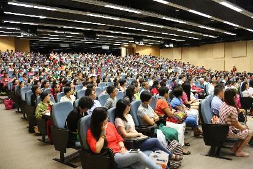

香港中文大学问答
『2014年8月6日』
（一）问：我是香港中文大学法学院的硕士。佛教认为存在地狱道、天道等六道，请问这一点如何证实？
答：要证明世上的事物存在，有几种方式：
一、现量。对于比较明显的事物，我们的眼识等五根识，在无错乱的情况下可以直接感知，比如眼见色法、耳听声音、舌尝味道，以此就可以确定色法等存在。这种证明方法非常简单直接。
二、比量。对于比较隐蔽的事物，可以依靠逻辑推理来证实。
比量跟现代逻辑学中的三段论是一回事：三段论是依靠大前提、小前提引出结论，或者通过已知的理由推测未知的法，而比量也是运用能立根据推出所立的结论。
打个比方，假如我没有去过美国，那么通过询问去过的人，依靠对方的可靠语言来推知美国的存在，这就是运用了比量。
很多人觉得“凡是我看不见的，肯定不存在”。如果明白比量的道理，就知道这种观点不合理，有些事物虽然没有亲眼见到，但是运用比量可以证实，那么也可以确定它们真的存在。
三、教量。对于非常隐蔽的事物，比如光、原子、夸克等等，可以依靠专业人士的语言来证实。
大家都清楚，世间专业领域的问题，非专业人员一般知之甚少，而专业人员则会了如指掌；同样的，六道轮回极为隐蔽，超越了一般人的认知范畴，但是佛陀却悉知悉见，所以可以依靠佛陀的语言来证实其存在。
印度的月称论师也曾说“六道轮回并非一般人所能了知”，一般人能接触到人道、畜生道，但对其他道则茫然无知。不过，也有人做噩梦时见到鬼或者机缘巧合遇到鬼，那时就知道鬼是存在的。另外，现代科学对于天人也探测到一部分，比如外星人，不过对于他们的了解非常有限。
然而，如果借助佛的智慧，就可以轻松地了知饿鬼、天人乃至地狱众生的存在。
当然，在运用佛语作为依据时，首先要相信其准确性，而有关佛语的真实无误，在佛教论著中进行了严密论证；有了信心之后，我们发现佛在很多经典中都说存在六道，那么就可以断定六道的真实性。
除了六道轮回，因果规律也是非常隐秘的，需要依靠佛语来证实。
有一位美国教授，研究龙猛菩萨观点多年，昨天他用了一个浅显易懂的比喻描述因果法则的隐蔽性：一只苹果被箭射穿了，当时大家只看到这个结果，对于背后的因缘一无所知。同样的，一家中的两兄弟，一个聪明、一个愚笨，人们只是看到这个结果，却难以窥测其中的原因，因为这可能关乎前世，而这种横亘三世的因果关联在佛经中有着深细的分析。
一个人要明白量子力学的一些原理，要花上很多年；同样，六道轮回与业因果的道理看似简单，但是要生起真实信心，也要下一番功夫——至少十到二十年中不断地学习相关教理，最后才能真正明白。
（二）问：这个时代中灾难不断，比如马航空难，以及最近的地震。面对这些，我们可以做些什么？
答：作为一个善良的人，看到他人遭遇灾难，应当力所能及地伸出援助之手。如果是佛教徒，可以通过诵经、念咒等方式为遇难者和幸存者祈福。我前段时间也呼吁一些佛弟子，至少念一部经回向给最近灾难中的受害者。
其实不论你信仰哪个宗教，抑或没有信仰，既然生活在这个世界，都应当关注我们的共同家园，尤其大学生更应如此。现在个别大学生对什么事都漠不关心，天天沉溺于玩手机，这不是很好。
另一方面，灾难的出现其实是无常规律的一种昭示。
见到他人的离去，人们往往很少思考自己何时死亡，这是无常观没有修好。其实无常不仅会光顾别人，我们每个人都可能突然遭遇生命的危机。即便没有遇到重大灾难，看似岁月静好，在座的人也会一个接一个地告别世间，再过五十年，这里的大多数人都会不在人世。所以，都应当树立无常的观念，这很重要。
（三）问：在台湾有这样一群人，他们愿意在死后将身体捐赠给医学院，供解剖使用，让学生在自己的身体上探索生命的奥秘，而学生们称这样的“老师”为无语良师。
我因为学佛才知道人死后的八小时内，身体不能被触碰，但是又被这群特殊的大愿“老师”所感动。请问他们将身体奉献给医学，会影响往生吗？
答：遗体捐献不仅在台湾有，在世界其他地方也有。
按照佛教的观点，确实如你所说，临终者最好是在安详的状态中离开，并且他身边的人不要哭泣，不要做不如法之事，而应该念诵清净的咒语、经文，让临终者在经咒声中逝去，这样他会更容易获得解脱。
不过，有些人不一定承认人死后还有灵魂，更不相信灵魂可以去往清净刹土，所以他们愿意在去世后将身体奉献给医学界，这也没什么不可以。但如果是佛教徒，可能会有自己的想法和安排。当然，佛教徒中也有不考虑来世，将身口意全部奉献的情形。
（四）问：我的爸爸患鼻咽癌快四年了，我的妈妈得了忧郁症，我的老公是精神分裂症，还有我的奶奶也卧病在床，我身边有太多的病人，我不知道自己为什么会有这种遭遇。今年我进入佛门参加静修，但是却得不到家人的理解。这些都困扰着我……

答：在广阔无垠的轮回中，众生的业确实千差万别。说到业，大家一定要小心谨慎，因为它会深深影响着你的人生。
如果要深入了解业，需要明白“因”与“缘”的概念：“因”是成就果法的根本因素，比如前世的一些业；“缘”是成就果法的辅助因素。打个比方，苗芽依靠种子、水、土等聚合而生，其中种子是因，水、土等是缘——虽然水、土等对苗芽也起了很大作用，但最根本的因素还是种子。
世间的任何果都是因缘和合而生，因与缘缺一不可，这一点谁也无法否认。如果只有因而没有缘，不必说产生果法，乃至“因缘”这个词也没有了存在的必要。
不过现在很多人不明白这个道理，遇到问题只看缘不看因，由此导致很多事无法解释。比如许多人希求财富，但是并非人人都如愿以偿，即使付出同样的努力，依然是有人金钵满盆，有人两手空空。对于这种现象，如果只看缘——今生的努力，而不看因——前世的福报，可能永远找不到其中的缘由。
世间的命理学家也会研究命运，但是仅限于观察今生，而不会结合前世进行分析。实际上佛陀说过：“欲知前世因，今生受者是，欲知来世果，今生作者是。”意思是，想要知道自己前世造了什么业，就看今生所感受的果报，想要知道自己来世的情形，就看今生做了什么。这句话看似平常，但是蕴含的义理却非常深奥。
你的家中有很多病人，这一点我依据教理推断：应该是前世的因所致——你们一家人前世造了不好的业，比如一起吃动物肉，由此就导致今生一起感受痛苦。
这种业，在现代人身上也愈演愈烈，比如每年春节前后，各大饭店都是人头攒动，一家一家围坐在一起，大快朵颐地嚼着动物肉。每每看到这种情景，我都非常伤心和感叹：他们现在开开心心地造恶业，来世却要哭哭啼啼地承受苦果，实在可怜！
所以，造成你家庭不幸的原因，可能不是别的，而是一家人往昔曾一起造过恶业。因此你遭遇这种痛苦时，更应深入思维因果，生起坚定的信心。
不过，你的这种遭遇，很多人也有类似的经历。虽然面对不幸并非易事，但还是要内心坚强，因为任何痛苦都有尽头，而且都能转化。另一方面，在佛教团体中，如果有人遭受灾难，其他人都会伸手相助，这在其他群体中不一定有。所以很多人会关心和帮助你的，你更应该坚强。
如果是我家中发生类似的事，我不会特别悲痛，也不会难以承受，而是会想：这是大家前世一起造业的结果，唯有好好忏悔才能化解，而且要坚强地活下去，勇敢地把该做的事做好。
换个角度看，人间的痛苦比之地狱、饿鬼的痛苦根本不算什么，是微乎其微的。
所以，希望你坚强、勇敢地面对困境，一切都会过去。
（五）问：如今世间有不少素食主义者，请问素食有哪些好处？
答：素食能带来很多利益。
首先，素食对培养善心很有帮助。
一个人如果酷爱吃肉，会变得性情暴躁，而如果选择吃素，性格则会慢慢变得温和。这一点在动物界也看得出来，食肉动物，诸如狼、虎之类，都有锋利的爪牙，且生性残忍；而食草动物，诸如野兔、牛等等，则比较温顺。
站在更长远的角度看，即生中特别爱吃肉的人，将来如果转生为人，会特别霸道、恶劣；如果转生为动物，也不会是温和的食草动物，而会成为猛兽之类。所以，吃素对自己的生生世世都有意义。
其次，素食对健康大有裨益。
我认识一个人，他之前吃肉，后来转而吃素。我问他感觉如何，他说：“吃素后身体非常轻松，高血压、心脏病等都缓解了。”
其实吃素对健康的作用，在现代医学中也得到证实，所以如今很多没有信仰的人，并非出于对众生的悲心，而是为了身体健康，从而加入吃素的行列。
再者，素食也受到爱美人士的青睐。
吃肉容易让身体发胖，而吃素则能变得苗条。有个人说自己之前吃肉时感觉好像吃一斤就会胖一斤，吃素后身材变得正常了。
总而言之，素食确实是一种很好的饮食选择。
（六）问：我很想劝身边更多人吃素，请问怎样才能很好地完成这件事？
答：劝人吃素的发心是很好的，不过实际去做时也要具有善巧。
佛经中讲过一个“母亲救子”的比喻：一个小孩子生病了，但是医生开的药很苦，难以下咽，如果直接喂给他，他肯定不愿吃。后来母亲怎么做的呢？她把药涂在自己乳房上，然后给孩子喂奶，这样药和着奶水就被孩子一起喝下去了，最后孩子的病也得以痊愈。
这个故事告诉我们：度化众生时，运用善巧方便很重要。
不过现在有些佛教徒却背道而驰，他们特别狂热，即便看到路人，也会急不可待地说：“快皈依吧。”这样不但无法达到目的，还会适得其反，引起对方的厌烦。
同样的，你想要劝别人吃素，也要考虑对方的情形。有些人的食肉习气根深蒂固，一时难以扭转。我就听说有个人每天一定要吃活青蛙，自己一边剥一边吃，而且对此习以为常，如果突然要求他吃素，也很困难。所以面对类似的情形，不能操之过急，可以慢慢观察因缘再去劝导。
总之，劝人行善也要具足善巧，而善巧源于内心的智慧。要获得智慧，唯一的途径就是坚持不懈地学习。
不过现在很多佛教徒不爱学习，不知道香港的佛教徒怎么样？五年前我来这里时有些不太满意，当时我说：“十五年前我来过这里，这次再来时发现个别人没有任何进步。”后来听说有人很不服气：“您怎么这么说呢？我还是有进步啊，十五年前您来时，我还没有修加行，现在我基本修完了。”修了十多年，还只是“基本”修完。（众笑）
实际上我们要知道，佛学不是简单的书本知识，并非看几页书就能明白，而是要深入学习才能有所领悟。
去年我去美国、德国的一些学校时发现，那里很多教授学习佛法的精神，令我这个出家多年的人都十分钦佩——他们付出了非常多的时间、精力、财力、物力，甚至把家中的重要之事暂时搁置，而到其他地方参学，在参学过程中还通晓了当地的语言。凭借着精进、严谨与科学的态度，他们对于因明、中观等甚深道理都非常通晓。
与这些人形成鲜明的对比，个别佛教徒的学佛却沦于形象——开法会时就背着包、拿着转经轮赶过去，平时既不看书，也不修行，虽然已经皈依一二十年了，但对于三宝的含义，还是懵懵懂懂。
这种“形式化学佛”的现象需要断绝，否则佛教会被毁坏——不是唯物论者，不是其他宗教徒，而是一些盲目无知的佛教徒会葬送佛教的前途，因为这些人不具备高尚的人格，不了知佛教的道理，由此会使其他人认为佛教是一种迷信。
“文革”期间，“迷信”是一个非常泛滥的词。而如果人们不爱学习，那么迷信在这个时代依然存在。
前段时间有些教授说：迷信从拉丁美洲一直蔓延到日本，后来在中国大地不断滋生。
有些人认为佛教是迷信，其实佛教的教义完全经得起智慧的观察，而且现在官方也不会把“迷信”一词安在佛教头上。但是个别佛教徒的行为不如法，确实会给佛教造成不良影响，比如天天都是求保佑、求加持、求灌顶，而且特别喜欢做个仪式然后吃吃喝喝——当然，仪式也并非一无是处，儒家也说仪式有其历史与存在价值——但仪式不是最主要的，最主要的是明白仪式所传达的内涵，否则确实容易成为“迷信”。
总之，特别希望佛教徒能长期深入地学习教理，这是我给佛教徒的一个建议。
（七）问：学佛之后，我的一些朋友觉得我神神道道的，比如饭前还要供养。我的哥哥因为对佛教不了解，同时出于对我的爱护，也常常阻止我学佛。我该如何面对这些？
答：我刚才也讲了，作为佛教徒，吃饭、走路等行为都应相合于场合，这方面要具备方便与智慧。
至于你的哥哥，可能也是很好的人，但是目前并不信佛，那你也不用强迫他学佛，因为每个人的因缘不同。同时，对于他的观点和行为，你不必特别反对，有必要时可以适当随顺，但是根本的见解上不能跟他同流合污。
（八）问：乔布斯年轻时就去印度学禅，而且一生食素，为什么却在五十多岁就离开人世？
答：乔布斯的早逝，跟他学佛没有什么关系。
他刚刚离去时，有关他的传记大概有三个版本，其中两个我都看过。从传记中可以了解到他把每天当作生命的最后一天，所以他的离开也并非不情愿，因为他对待生命的态度就非常随缘。
另外，乔布斯生前的理想是给人类的生活创造便利，这一点他确实做到了，生命的价值已经实现，这就足够了。其实人不一定非要活得很久。从另一个角度而言，一个人即便寿命很长，如果整天造恶业、害众生，这种长寿也没有什么意义。
（九）问：我来自澳大利亚，感觉年轻人的困惑好像不分东西方，这些困惑反映出他们缺乏处理生活中必然问题的智慧，也说明他们所接受的教育没能教给他们这种智慧。那么您觉得在如今的学校教育中添加什么课程，可以解决这一问题？
答：确实如你所说，东西方的年轻人有着类似的价值观、类似的追求，也有着类似的困惑，比如梦想与现实的落差。这种状况应该引起社会的关注，尤其教育界人士的关心。
对于当前的学校教育，北京大学一位教授曾这样评价：“我们的一些大学，包括北京大学，正在培养一些‘精致的利己主义者’。”这句话语惊四座。
后来大家眼中的一个“青年精英”出事，有些记者对他作了采访，之后感慨道：虽然他颇具才华、擅长社交，是年轻人中的佼佼者，但是我们不了解他的价值观，可能他无法平衡欲望与现实，就滑向了堕落的深渊。
年轻人身上出现的很多问题，归根结底跟如今的教育有着直接关系——俗话说“教书育人”，教书是书本知识的传授，育人是道德品行的培育，但是目前很多学校只有“教书”，没有“育人”。
如果让我提一些建议，我觉得学校中应该增加传统文化为主的道德教育，比如《弟子规》以及大乘慈悲理念，依靠这些文化精髓，可以帮助学生树立正确的人生观、价值观，对整个社会乃至全世界也会带来不可估量的利益。现在藏地个别的中专、大专院校也在讲授《入菩萨行论》《佛子行》等论著。
因此，我非常希望《弟子规》等先贤教言以及大乘佛教的珍贵理念，能在学校教育中得以推广。不过要实现这一目标，也并非依靠我这样一个佛教徒的呼声就能实现的，更重要的还是广大民众提出合理的建议和诉求，这样逐渐会有一定作用。
（十）问：现在密宗、禅宗、净土宗在中国内地以及其他有华人的地方，都比较盛行，那么哪个宗派更契合自己，对此如何观察？
答：密宗、禅宗和净土宗确实在如今的汉地很受欢迎，将来一段时间中也许会更加兴盛。
我想就总的趋势而言，信仰佛教的人会越来越多，身份上也会有前所未有的变化——以前大多是老年人或遭遇挫折的人，现在则表现出年轻化、高层次化的态势，比如相当一部分佛教徒是高校教师、政界要员以及商界精英，他们信仰佛教并非出于盲目，而是通过智慧观察发现佛教的道理真实不虚，依靠一种笃定的信解而趣入佛门的。
我在《残酷才是青春》的前言中也讲，不少人认为佛教是老年人的宗教，但实际上佛教对年轻人也非常有用。不过我希望年轻人最好是没有遇到挫折时，就早一些接触佛法，这样会从中受益良多，否则，如果已经苦不堪言才遇到佛法，那时自己也会深感惋惜。
关于你的问题，其实禅净密三宗可以圆融修持。近代科学家黄念祖居士就是这方面的典型例子，他既修密，也参禅，同时也学净土宗。我看过他的传记，觉得他的观点非常圆融，特别适合如今包容并蓄的时代。
20年前我来香港时，这里修净土宗的人比较多，学密宗的也有一部分，两派的追随者经常发生冲突，不过现在基本没有这种现象了。
我希望你不论选择净土宗、密宗还是禅宗，都应当知道：这三者都是释迦牟尼佛传下的清净教法，因为佛陀所传八万四千法门的核心是四谛，而密宗以及显宗的净土宗、禅宗，乃至天台宗、华严宗等，对于四谛的解释，在大的原则上没有什么差别。
所以，面对不同宗派，我们不应忽视其根本的共同点，而在细微差异上争辩不休。不论修学哪个宗派，都没必要舍弃或诽谤其他宗派。
现在有个别人对密宗颇有微词，其实观察一下就发现，他们根本不了解密宗，只是断章取义、毫无根据地诋毁。这非常可笑，如果觉得密宗某个道理不合理，可以开诚布公地说出来，大家探讨与辩论，问题自然迎刃而解，而没必要在背后指指点点。其实这些诽谤者中，有些是别有用心，有些是空虚无聊，有些是愚痴无知，有些甚至是精神状况出了问题。实际上真正以智慧衡量就知道，密宗的教义是纯净无垢的。
佛教各宗派的团结和合，对个人的修行与解脱有很大帮助。
不仅是佛教内部的派别，不同宗教也需要团结起来。我刚刚开完各宗教间对话的会议，现在不论佛教、天主教、基督教还是伊斯兰教，以及儒教和道教等各宗各派，都共同致力于维护这个世界，在这方面发挥作用。
而作为非宗教信仰者，也有必要了解一下宗教。有些专家说：“现在的大学教育只包含人类知识的五分之一，其中古希腊哲学只有部分内容出现在大学课程中，而印度哲学、佛教哲学以及古罗马哲学等等，则是缺失的。”因此大学生不要认为自己对世间包罗万象的知识已经了如指掌，觉得“我是大学生，学问很大”。其实并不是这样。
我昨天遇到一个名人，为人非常谦逊，他说：“其实我也是普通人，只不过以偶尔的因缘拥有了一些名声，实际上内心还是有很多烦恼。”
所以，很多大学生也应当学会低调、谦虚，如果能做到这样，那么寻找真理的路会更加顺利，最终也会如愿以偿。